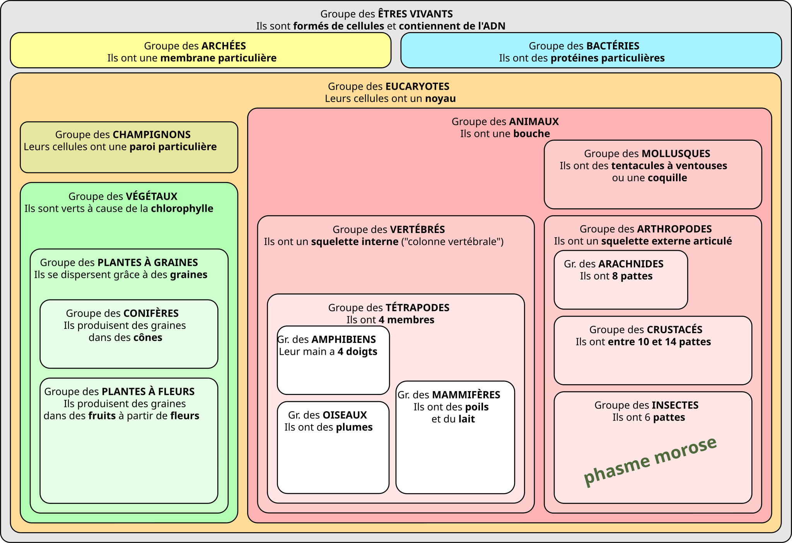

Représentation dans les groupes emboîtés

- Domaine
- Eukaryota (eucaryotes)
- Règne
- Animalia (animaux)
- Embranchement
- Arthropoda (arthropodes)
- Classe
- Insecta (insectes)
- Ordre
- Phasmatodea
- Famille
- Lonchodidae
- Genre
- Carausius
- Espèce
- C. morosus
Carausius morosus est un être vivant, donc il a sa place dans la classification en groupes emboîtés vue en classe.

Utilise le zoom pour visualiser toute la place du phasme morose dans l'arbre du vivant.